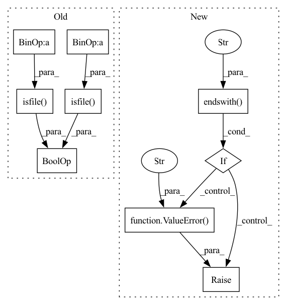

Pattern ID :8402

Before Change
logger.info(f"----- Pretrained: Load model state from {config.MODEL.PRETRAINED}")
model.set_state_dict(model_state)
if config.MODEL.RESUME and os.path.isfile(config.MODEL.RESUME+".pdparams") and os.path.isfile(config.MODEL.RESUME+".pdopt"):
model_state = paddle.load(config.MODEL.RESUME+".pdparams")
model.set_dict(model_state)
opt_state = paddle.load(config.MODEL.RESUME+".pdopt")
After Change
// 6. Load pretrained model or load resume model and optimizer states
if config.MODEL.PRETRAINED:
if (config.MODEL.PRETRAINED).endswith(".pdparams"):
raise ValueError(f"{config.MODEL.PRETRAINED} should not contain .pdparams")
assert os.path.isfile(config.MODEL.PRETRAINED + ".pdparams") is True
model_state = paddle.load(config.MODEL.PRETRAINED+".pdparams")
// if from classification weights, add prefix "backbone" and set state dict
In pattern: SUPERPATTERN
Frequency: 3
Non-data size: 9
Instances
Fragment ID: 29281240
Project Name: br-idl/paddlevit
Commit Name: e57ae42947d7de2d28a3d2a606a621b76a0d1367
Time: 2021-09-15
Author: xperzy@gmail.com
File Name: object_detection/Swin/main_single_gpu.py
M Class Name: AnonimousClass
N Class Name: AnonimousClass
M Method Name: main(0)
N Method Name: main(0)
M Parent Class:
N Parent Class:
M File Name: object_detection/Swin/main_single_gpu.py
N File Name: object_detection/Swin/main_single_gpu.py
M Start Line: 253
M End Line: 253
N Start Line: 271
N End Line: 309
'>
Before Change
logger.info(f"----- Pretrained: Load model state from {config.MODEL.PRETRAINED}")
model.set_state_dict(model_state)
if config.MODEL.RESUME and os.path.isfile(config.MODEL.RESUME+".pdparams") and os.path.isfile(config.MODEL.RESUME+".pdopt"):
model_state = paddle.load(config.MODEL.RESUME+".pdparams")
model.set_dict(model_state)
opt_state = paddle.load(config.MODEL.RESUME+".pdopt")
After Change
// 5. Load pretrained model / load resumt model and optimizer states
if config.MODEL.PRETRAINED:
if (config.MODEL.PRETRAINED).endswith(".pdparams"):
raise ValueError(f"{config.MODEL.PRETRAINED} should not contain .pdparams")
assert os.path.isfile(config.MODEL.PRETRAINED + ".pdparams") is True
model_state = paddle.load(config.MODEL.PRETRAINED+".pdparams")
// if from classification weights, add prefix "backbone" and set state dict
'>
Fragment ID: 29281241
Project Name: br-idl/paddlevit
Commit Name: defc4bcb53a72fa0bb3ec8a237da8aed8afb053c
Time: 2021-09-15
Author: xperzy@gmail.com
File Name: object_detection/PVTv2/main_single_gpu.py
M Class Name: AnonimousClass
N Class Name: AnonimousClass
M Method Name: main(0)
N Method Name: main(0)
M Parent Class:
N Parent Class:
M File Name: object_detection/PVTv2/main_single_gpu.py
N File Name: object_detection/PVTv2/main_single_gpu.py
M Start Line: 265
M End Line: 265
N Start Line: 273
N End Line: 311
'>
Before Change
model.set_dict(model_state)
logger.info(f"----- Pretrained: Load model state from {config.MODEL.PRETRAINED}")
if config.MODEL.RESUME and os.path.isfile(config.MODEL.RESUME+".pdparams") and os.path.isfile(config.MODEL.RESUME+".pdopt"):
model_state = paddle.load(config.MODEL.RESUME+".pdparams")
model.set_dict(model_state)
opt_state = paddle.load(config.MODEL.RESUME+".pdopt")
After Change
// STEP 5: Load pretrained model or load resume model and optimizer states
if config.MODEL.PRETRAINED:
if (config.MODEL.PRETRAINED).endswith(".pdparams"):
raise ValueError(f"{config.MODEL.PRETRAINED} should not contain .pdparams")
assert os.path.isfile(config.MODEL.PRETRAINED + ".pdparams") is True
model_state = paddle.load(config.MODEL.PRETRAINED + ".pdparams")
model.set_dict(model_state)
logger.info(f"----- Pretrained: Load model state from {config.MODEL.PRETRAINED}")
'>
Fragment ID: 29281239
Project Name: br-idl/paddlevit
Commit Name: 66ec7d581509e0d34a264da33f917b4a577b1996
Time: 2022-01-07
Author: xperzy@gmail.com
File Name: object_detection/DETR/main_single_gpu.py
M Class Name: AnonimousClass
N Class Name: AnonimousClass
M Method Name: main(0)
N Method Name: main(0)
M Parent Class:
N Parent Class:
M File Name: object_detection/DETR/main_single_gpu.py
N File Name: object_detection/DETR/main_single_gpu.py
M Start Line: 210
M End Line: 315
N Start Line: 231
N End Line: 405